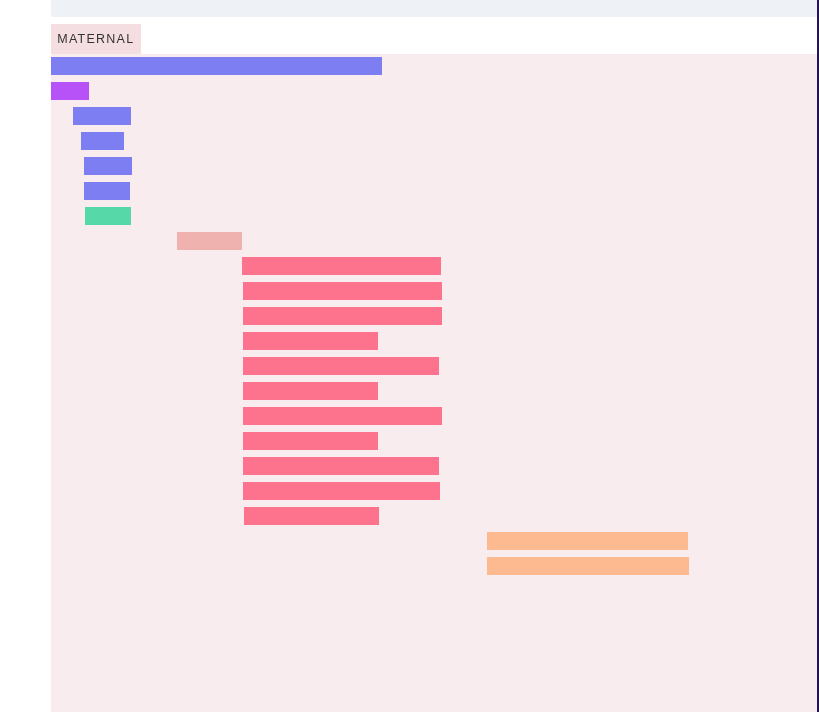
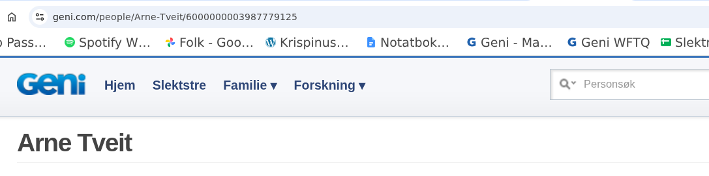
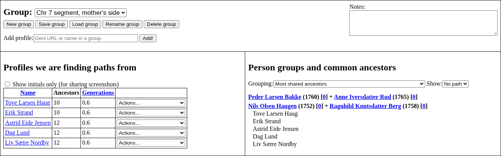
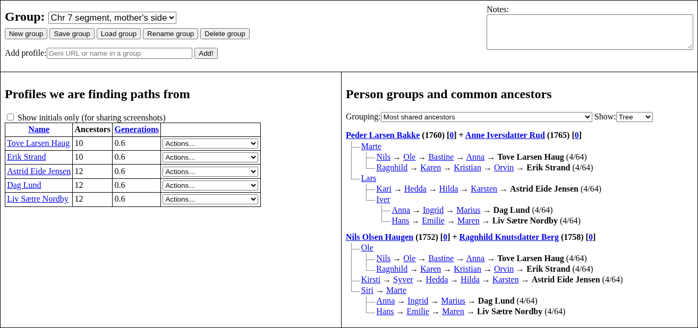

ACAC is a tool for figuring out all common ancestors for a group of people. This only makes sense if the people are assumed to be related, such as having matching DNA on a specific segment.
There are three steps in finding ancestor groups:

In DNAPainter, one may come across a block that looks like the red block in the image. It's tempting to assume that this indicates descent from a single ancestor. Note the names and whatever other identifying data you have found in DNApainter, and go to the next step.

The next step is to find the entries in geni.com corresponding to those matches. This may involve searching, or even finding an ancestor somewhere in the tree and entering the tree from MyHeritage down to the match. In the end you have a profile, and the profile has an URL, as seen in the top of the image. You can also enter the profile's GUID.If the match comes from MyHeritage, see How to find a MyHeritage DNA match on Geni.

Now go to ACAC and choose the DNA match group you're working on in the "Group" menu, or create one using the "New group" button. The name should be something you associate with the group, for instance "Harald chr 3 pos 31 mother's side".
Then copy the URL found above, or enter the profile's GUID, in the "Add profile" field. ACAC will then (after asking you to log in to Geni) search Geni for the ancestors of that profile, back to the year in "Limit for tree building". And if we're lucky, we'll end up with a display like these examples, showing ancestors for this particular segment.
If the person is already a member of one of your other groups, you can type the start of their name instead. A list of up to five members of your groups whose names start that way appears under the field; pick one with the mouse, or with the arrow keys and Enter.
The profiles you're considering appear below the "Add profile" field, and the groups with their common ancestors appear to the right. As you add profiles, those groups may change and their common ancestor lists may shrink. The aim is for the groups to converge on a single set of ancestors that could be the source for that segment.
This means that all the people entered descend from those parents, and one of them (we don't know which) is likely the ancestor for that particular segment. All the links open the profile in a new window.
With "Show" set to "No path", ACAC shows the potential common ancestors followed by the profiles in the group.

Set "Show" to "Tree" to show how the profiles descend from each potential common ancestor, as a tree from the ancestors down to the profiles. Profiles that descend through the same child share a branch, and different ancestors can have different trees. "Path" shows the same paths as a list for each profile.Each profile in the list has an "Actions" menu:
The "Grouping" menu chooses how profiles are grouped by their shared ancestors, and the "Limit for grouping ancestors" slider leaves out ancestors born before the chosen year. A number in brackets after an ancestor, such as [0], is how many ancestors ACAC knows for that person; when there are few, clicking it fetches two more generations. "Show initials only" replaces the names of the group's profiles with their initials, so that you can share a screenshot without showing who your matches are.
The database and the groups are kept in browser storage and should be available after restarting the browser. ACAC saves them after fetching from Geni and when you switch groups; hit the "save database" button to save your work at other times, or use "save to file" to save the database to a file. Filenames are automatically generated.
A file saved with "save to file" is a backup of the whole database and all groups; keep a recent one. "Load from file" replaces the database and all groups with the contents of such a file. This also works when the browser's copy of the database has been damaged and ACAC says it could not read the database: load your latest backup, and ACAC starts again from it. The damaged copy is kept aside in the browser, but anything added since the backup was saved is lost.
"Save group" saves the information gathered for the current group to a file, and "Load group" adds such a file to your database, for instance to continue the work on another computer. "Rename group" and "Delete group" rename or delete the current group.
ACAC can be open in several browser tabs at once. They share the database and the groups, which each tab merges when it saves. Each tab has its own settings, such as "Show" and "Grouping", and its own current group; a new tab starts with the standard settings and the group that was current when the database was last saved. The Geni login is also kept per tab: a tab stays logged in when you reload it, but a new tab asks you to log in again.
If Geni does not answer within five seconds, which seems to happen when the login has expired, ACAC stops fetching, shows a message, and asks you to log in again at your next step. If Geni stops answering in some other way, "Log out of Geni" makes ACAC forget the login so that you can log in afresh; you stay logged in on geni.com itself.
Enjoy!